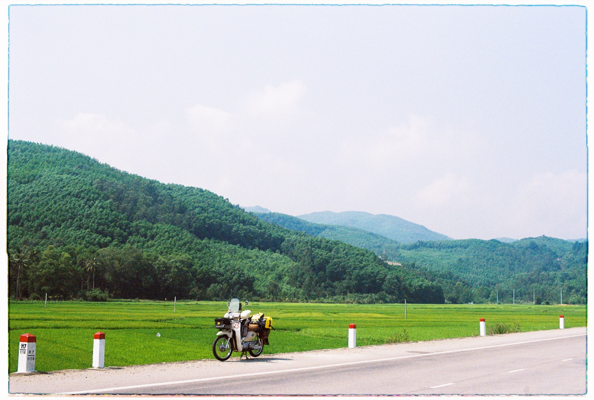
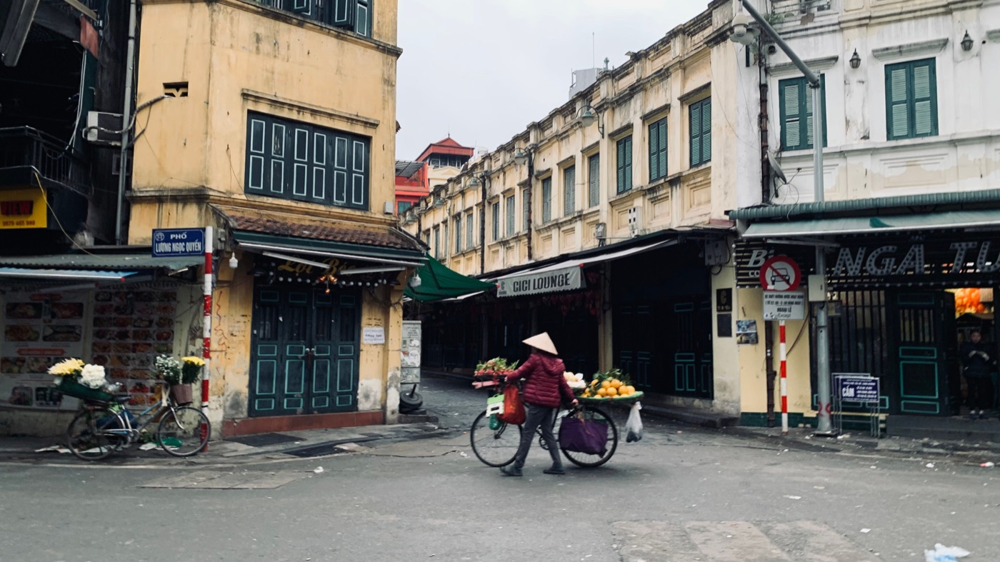

Как перевозить вещи на байке безопасно

Пара пакетов меняет управление меньше, чем чемодан, но любое плохо закреплённое место может попасть в колесо, задеть руль или сместиться при торможении. Правило простое: груз должен быть компактным, неподвижным и не мешать управлению.
Куда класть вещи
- Под сиденье: лучший вариант для небольших ценных предметов, если они не боятся нагрева.
- На штатный крючок: только лёгкий пакет, который не касается коленей и не раскачивается.
- В кофр: удобно для шлема, дождевика и покупок в пределах допустимой нагрузки.
- На задний багажник: только с надёжными ремнями и без свисающих концов.
- В рюкзак: подходит для лёгких вещей; тяжёлый рюкзак утомляет и меняет баланс.

Как распределить вес
Тяжёлое размещай ниже и ближе к центру байка. Не вешай большой вес только на одну сторону руля. Задний груз не должен выходить далеко за габариты и разгружать переднее колесо.
Проверь допустимую нагрузку конкретного багажника и кофра. Пластиковая площадка может выглядеть прочной, но не рассчитана на тяжёлый чемодан.
Чем закреплять
Используй целые стяжные ремни или качественную багажную сетку. Обычная верёвка легко ослабевает, а эластичный крюк может сорваться. Все свободные концы убери так, чтобы они не попали в колесо, ремень вариатора или цепь.
Проверка перед стартом
- Покачай груз руками: он не должен двигаться отдельно от байка.
- Поверни руль в обе стороны.
- Проверь обзор в зеркалах.
- Убедись, что работают свет и номер не закрыт.
- Проедь первые сто метров медленно и остановись для повторной проверки.
Как меняется езда
С грузом разгон слабее, тормозной путь больше, а байк медленнее перекладывается в повороте. Увеличь дистанцию и не пытайся ехать в привычном темпе. На 50cc перегруз особенно заметен.
Что лучше не перевозить самому
Большой чемодан, стекло, длинные предметы, тяжёлую бытовую технику и груз, закрывающий руль или свет, безопаснее отправить такси или доставкой. Экономия одной поездки не стоит падения.
Дождь и ценные вещи
Пакет из магазина не считается водонепроницаемой упаковкой. Документы и электронику положи в отдельный герметичный пакет. После начала дождя останавливайся для переупаковки вне проезжей части.
Если планируешь дальнюю поездку, сначала прочитай материал о проверке байка перед стартом.